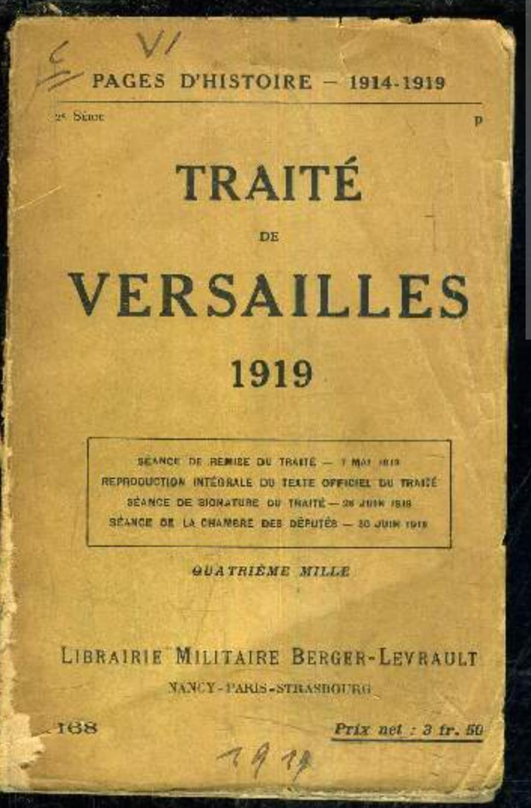
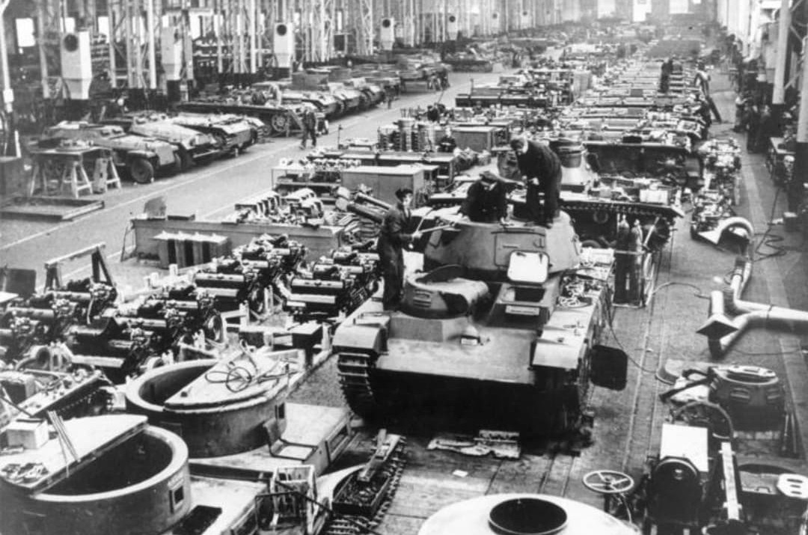
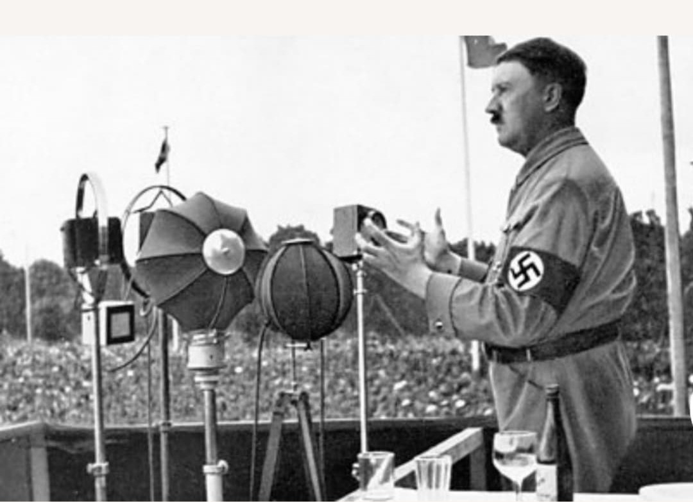
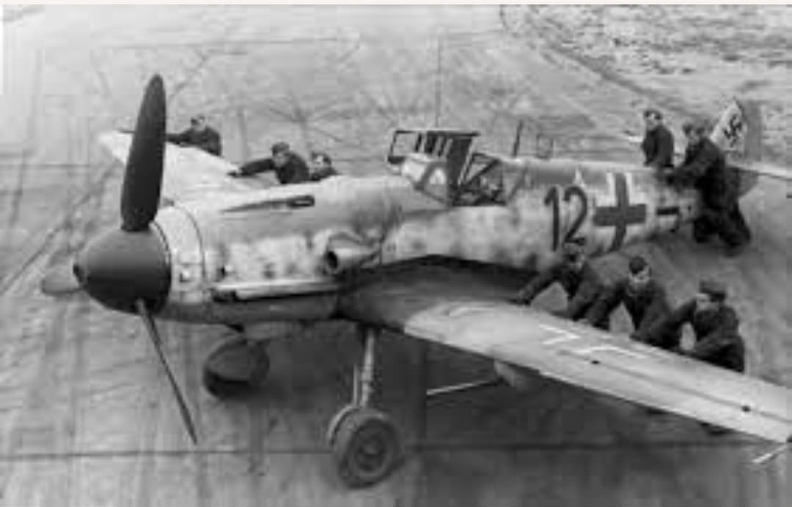
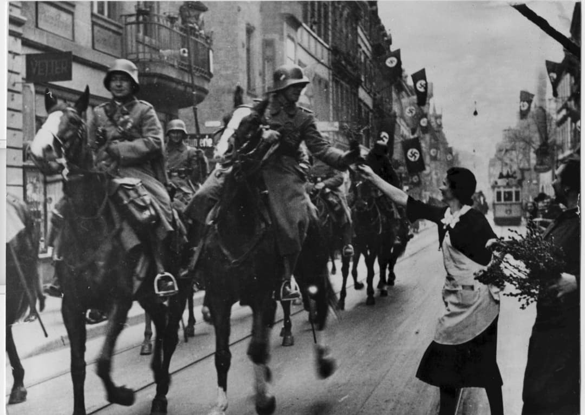
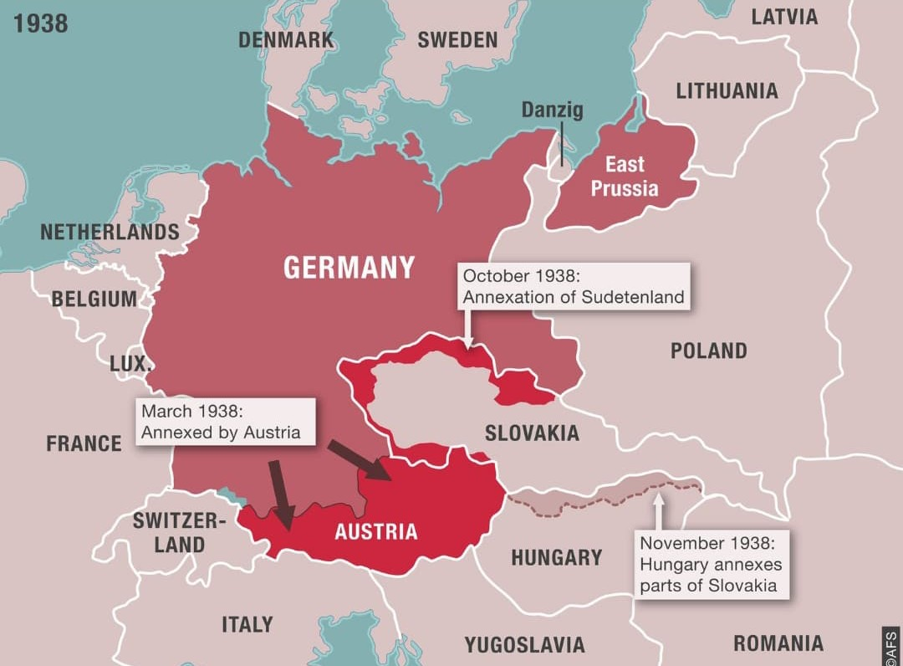

Le traité de Versailles impose à l’Allemagne des limites strictes : armée réduite, interdiction des chars, des avions, des sous-marins, démilitarisation de certaines zones comme la Rhénanie. À partir de 1933, Hitler va tester ces limites, étape par étape, pour voir jusqu’où il peut aller sans provoquer de réaction militaire de la France ou du Royaume-Uni.

En 1919, le traité de Versailles limite fortement la puissance militaire allemande :
Ces clauses visent à empêcher l’Allemagne de redevenir une grande puissance militaire. Pour Hitler, ce traité est vécu comme une humiliation à effacer.

Dès son arrivée au pouvoir en 1933, Hitler lance un réarmement clandestin. Des usines produisent des armes en secret, des officiers sont formés discrètement, et des programmes de développement de chars et d’avions sont mis en place.
Officiellement, l’Allemagne respecte encore le traité. En réalité, elle prépare déjà une armée bien plus puissante que ce qui est autorisé. C’est le premier test : violer le traité sans le dire.

Le 16 mars 1935, Hitler annonce publiquement le rétablissement du service militaire obligatoire. C’est une violation directe du traité de Versailles, qui limitait l’armée à 100 000 hommes.
La France et le Royaume-Uni protestent diplomatiquement, mais ne prennent aucune mesure militaire. Hitler constate qu’il peut violer le traité sans être arrêté.

En 1935, Hitler révèle officiellement l’existence de la Luftwaffe, une force aérienne de combat déjà en partie préparée en secret. Là encore, c’est une violation claire du traité de Versailles, qui interdisait à l’Allemagne de posséder une aviation militaire.
Malgré cela, aucune intervention militaire n’est décidée par les puissances occidentales. Hitler voit que les démocraties parlent, mais n’agissent pas.

Le 7 mars 1936, Hitler ordonne à ses troupes d’entrer dans la Rhénanie, une zone qui devait rester démilitarisée selon le traité de Versailles et les accords de Locarno. L’armée allemande est encore fragile : si la France avait réagi militairement, Hitler aurait probablement dû reculer.
Mais la France et le Royaume-Uni choisissent de ne pas intervenir. Pour Hitler, c’est un test réussi : il a violé ouvertement le traité, et personne n’a utilisé la force pour l’arrêter.

Entre 1933 et 1936, Hitler a violé plusieurs clauses essentielles du traité de Versailles sans rencontrer de réaction militaire. Il en tire une conclusion simple : les démocraties occidentales veulent éviter la guerre à tout prix.
Cette conviction le pousse à aller plus loin : Anschluss de l’Autriche (1938), annexions en Tchécoslovaquie, puis invasion de la Pologne en 1939. Tester les limites du traité de Versailles est une étape décisive dans la marche vers la Seconde Guerre mondiale.
Page du Musée HOP WW2 – Section Mur de Berlin & Guerre froide